Spring MVC⯐
简介
Spring 为展现层提供的基于 MVC 设计理念的优秀的Web 框架，是目前最主流的 MVC 框架之一
Spring3.0 后全面超越 Struts2，成为最优秀的 MVC 框架
Spring MVC 通过一套 MVC 注解，让 POJO 成为处理请求的控制器，而无须实现任何接口
支持REST风格的URL请求
采用松散耦合可插拔组件结构，比其他MVC框架更具有扩展性和灵活性
原理
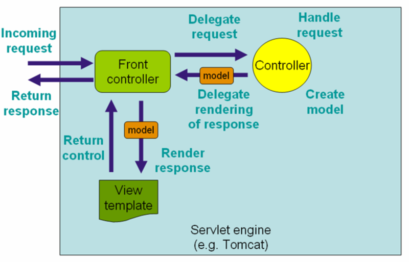
体系结构
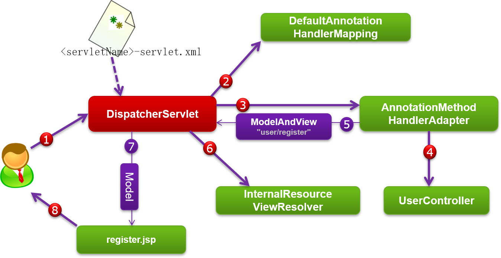
代码框架
Spring Boot集成
安装
在pom.xml添加以下依赖：
开发流程
spring-boot-starter-web是一个用于在Spring Boot应用中集成Spring MVC的starter，使用它可以方便地进行Srping MVC的配置和使用。下面是spring-boot-starter-web的开发流程：
在pom.xml文件中添加spring-boot-starter-web依赖：
在application.properties或application.yml文件中配置MyBatis相关属性，例如：
创建Controller类，使用@Controller、@RestController注解标注该类，使用@RequestMapping、@GetMapping、@PostMapping注解标注该类中的方法，指定请求路径和请求方法。
输入
主要的注解
| 类型 | 说明 |
|---|---|
| @Controller | 指示Spring类的实例是一个控制器 |
| @RestController | 指示Spring类的实例是一个Restful控制器 |
| 类型 | 说明 |
|---|---|
| @RequestMapping | 映射一个请求或一个方法 |
| @RequestParam | 绑定请求参数 |
| @RequestHeader | 绑定请求头参数 |
| @CookieValue | 绑定Cookie的值 |
| @PathVariable | 绑定URL中的变量 |
| @GetMapping | 匹配GET方式的请求 |
| @PostMapping | 匹配POST方式的请求 |
| 类型 | 说明 |
|---|---|
| @ResponseBody | 指示返回JSON数据 |
Spring MVC进行映射的依据
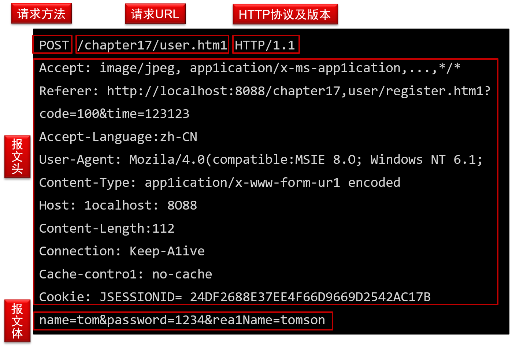
请求URL
URL表达式
@RequestMapping不但支持标准的URL，还支持Ant风格的和带{xxx}占位符的URL。以下URL都是合法的：
| URL | 匹配地址 |
|---|---|
/user/*/createUser |
/user/aaa/createUser、/user/bbb/createUser等URL。 |
/user/**/createUser |
/user/createUser、/user/aaa/bbb/createUser等URL。 |
/user/createUser?? |
/user/createUseraa、/user/createUserbb等URL。 |
/user/{userId} |
user/123、user/abc等URL。 |
/user/**/{userId} |
user/aaa/bbb/123、user/aaa/456等URL。 |
company/{companyId}/user/{userId}/detail |
company/123/user/456/detail等的URL。 |
绑定{xxx}中的值
URL中的{xxx}占位符可以通过@PathVariable("xxx")绑定到操作方法的入参中，如：
如果@PathVariable不指定参数名，只有在编译时打开debug开关（javac -debug=no）时才可行！！（不建议）
请求方法
请求方法，在HTTP中这被叫做动词（verb），除了两个大家熟知的（GET和POST）之外，标准方法集合中还包含PUT、DELETE、HEAD和OPTIONS。这些方法的含义连同行为许诺都一起定义在HTTP规范之中。一般浏览器只支持GET和POST方法。
常见的HTTP请求方法有以下几种：
| 方法 | 描述 |
|---|---|
| GET | 请求指定的页面信息，并返回实体主体。 |
| HEAD | 类似于GET请求，只不过返回的响应中没有具体的内容，用于获取报头。 |
| POST | 向指定资源提交数据进行处理请求（例如提交表单或者上传文件）。数据被包含在请求体中。 |
| PUT | 从客户端向服务器传送的数据取代指定的文档的内容。 |
| DELETE | 请求服务器删除指定的页面。 |
| CONNECT | HTTP/1.1协议中预留给能够将连接改为管道方式的代理服务器。 |
| OPTIONS | 允许客户端查看服务器的性能。 |
| TRACE | 回显服务器收到的请求，主要用于测试或诊断。 |
| PATCH | 对资源进行部分修改。 |
报文头及报文体示例
表单对象绑定
所谓命令/表单对象并不需要实现任何接口，仅是一个拥有若干属性的POJO。Spring MVC按：
- "HTTP请求参数名 = 命令/表单对象的属性名"
的规则，自动绑定请求数据，支持"级联属性名"，自动进行基本类型数据转换。
使用Servlet API对象作为入参
在Spring MVC中，控制器类可以不依赖任何Servlet API对象，但是Spring MVC并不阻止我们使用Servlet API的类作为处理方法的入参。值得注意的是，如果处理方法自行使用HttpServletResponse返回响应，则处理方法的返回值设置成void即可。
使用Spring的Servlet API代理类
Spring MVC在org.springframework.web.context.request包中定义了若干个可代理Servlet原生API类的接口，如WebRequest和NativeWebRequest，它们也允许作为处理类的入参，通过这些代理类可访问请求对象的任何信息。
使用IO对象作为入参
Spring MVC允许控制器的处理方法使用java.io.InputStream/java.io.Reader及java.io.OutputStream/java.io.Writer作为方法的入参
Spring MVC将获取ServletRequest的InputStream/Reader或ServletResponse的OutputStream/Writer，然后按类型匹配的方式，传递给控制器的处理方法入参。
其他类型的参数
控制器处理方法的入参除支持以上类型的参数以外，还支持java.util.Locale、java.security.Principal，可以通过Servlet的HttpServletRequest 的getLocale()及getUserPrincipal()得到相应的值。如果处理方法的入参类型为Locale或Principal，Spring MVC自动从请求对象中获取相应的对象并传递给处理方法的入参。
输出
控制器返回值
@Controller
-
String
- 可以跳转视图，但不能携带数据
-
ModelAndView
- 可以添加Model数据，并指定视图
-
View
@RestController
-
Model
-
Map
-
void
- 在异步请求时使用，它只返回数据，而不会跳转视图
-
HttpEntity<?>或ResponseEntity<?>
-
Callable<?>
-
DeferredResult<?>
HttpMessageConverter
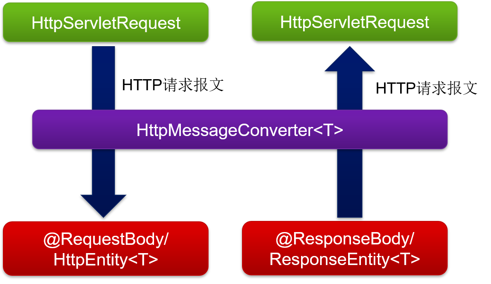
HttpMessageConverter实现类
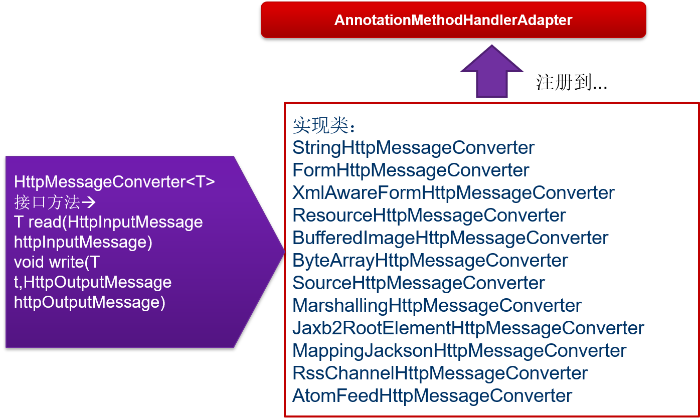
使用@RequestBody/@ResponseBody
将HttpServletRequest的getInputStream()内容绑定到入参，将处理方法返回值写入到HttpServletResponse的getOutputStream()中。
优点：处理方法签名灵活不受限
缺点：只能访问报文体，不能访问报文头
使用HttpEntity/ResponseEntity
优点：处理方法签名受限
缺点：不但可以访问报文体，还能访问报文头
数据转换、校验
数据绑定机理
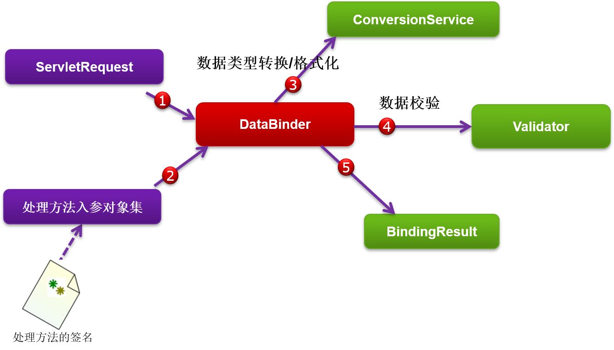
ConversionService
由于ConversionService在进行类型转换时，可以使用到Bean所在宿主类的上下文信息（包括类结构，注解信息），所以可以实施更加高级的类型转换，如注解驱动的格式化等功能。
以上User类，通过一个@DateTimeFormat注解，为类型转换提供了一些“额外”的信息，即代表日期的“源字符器”格式是“yyyy-MM-dd”
定义自定义的类型转换器
在Spring Boot中，可以通过实现Converter接口或者继承GenericConverter类来自定义类型转换器。具体步骤如下：
-
创建一个类，实现Converter接口或者继承GenericConverter类。
-
在类上使用@Component注解，将其注册为Spring Bean。
-
在Spring Boot应用的配置类中，使用@Import注解将自定义类型转换器类导入。
-
在Spring MVC的配置类中，使用addFormatters方法将自定义类型转换器添加到FormatterRegistry中。
例如，下面是一个将字符串转换为日期类型的自定义类型转换器的示例代码：
在Spring MVC的配置类中，可以这样添加自定义类型转换器：
@Configuration
public class WebMvcConfig implements WebMvcConfigurer {
@Autowired
private StringToDateConverter stringToDateConverter;
@Override
public void addFormatters(FormatterRegistry registry) {
registry.addConverter(stringToDateConverter);
}
}
这样，在Spring Boot应用中，就可以将字符串转换为日期类型了。
数据校验框架
Spring 3.0拥有自己独立的数据校验框架，同时支持JSR 303标准的校验框架。Spring 的DataBinder在进行数据绑定时，可同时调用校验框架完成数据校验工作。
在Spring MVC中，则可直接通过注解驱动的方式进行数据校验。
Spring的org.springframework.validation是校验框架所在的包
JSR 303
JSR 303是Java为Bean数据合法性校验所提供的标准框架，它已经包含在Java EE 6.0中。JSR 303通过在Bean属性上标注类似于@NotNull、@Max等标准的注解指定校验规则，并通过标准的验证接口对Bean进行验证。
可以通过http://jcp.org/en/jsr/detail?id=303了解JSR 303的详细内容。
| 注解 | 功能说明 |
|---|---|
| @Null | 被注释的元素必须为 null |
| @NotNull | 被注释的元素必须不为 null |
| @AssertTrue | 被注释的元素必须为 true |
| @AssertFalse | 被注释的元素必须为 false |
| @Min(value) | 被注释的元素必须是一个数字，其值必须大于等于指定的最小值 |
| @Max(value) | 被注释的元素必须是一个数字，其值必须小于等于指定的最大值 |
| @DecimalMin(value) | 被注释的元素必须是一个数字，其值必须大于等于指定的最小值 |
| @DecimalMax(value) | 被注释的元素必须是一个数字，其值必须小于等于指定的最大值 |
| @Size(max, min) | 被注释的元素的大小必须在指定的范围内 |
| @Digits (integer, fraction) | 被注释的元素必须是一个数字，其值必须在可接受的范围内 |
| @Past | 被注释的元素必须是一个过去的日期 |
| @Future | 被注释的元素必须是一个将来的日期 |
数据校验框架
<mvc:annotation-driven/>会默认装配好一个LocalValidatorFactoryBean，通过在处理方法的入参上标注@Valid注解即可让Spring MVC在完成数据绑定后执行数据校验的工作。
注意：Spring本身没有提供JSR 303的实现，所以必须将JSR 303的实现者（如Hibernate Validator）的jar文件放到类路径下，Spring将自动加载并装配好JSR 303的实现者。
如何使用注解驱动的校验
在已经标注了JSR 303注解的表单/命令对象前标注一个@Valid，Spring MVC框架在将请求数据绑定到该入参对象后，就会调用校验框架根据注解声明的校验规则实施校验。
使用校验功能时，处理方法要如何签名？？
Spring MVC是通过对处理方法签名的规约来保存校验结果的：前一个表单/命令对象的校验结果保存在其后的入参中，这个保存校验结果的入参必须是BindingResult或Errors类型，这两个类都位于org.springframework.validation包中。
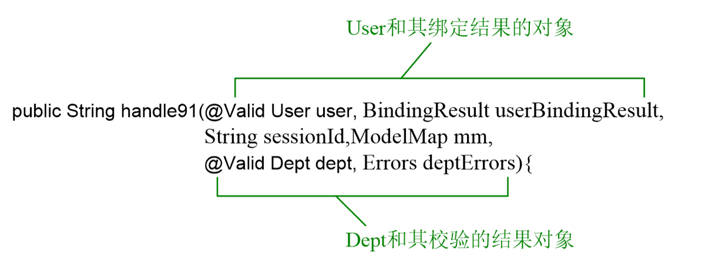
校验错误信息存放在什么地方？
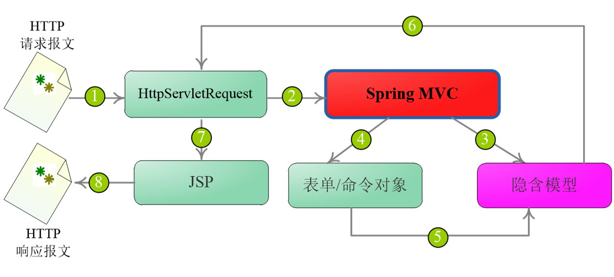
4.Spring MVC将HttpServletRequest对象数据绑定到处理方法的入参对象中（表单/命令对象）；
5.将绑定错误信息、检验错误信息都保存到隐含模型中；
6.本次请求的对应隐含模型数据存放到HttpServletRequest的属性列表中，暴露给视图对象。
页面如何显示错误信息
如何对错误信息进行国际化1
一个属性发生校验错误时，Spring MVC会产生一系列对应的错误码键：
如果userName的@Pattern校验规则未通过，则会在“隐含模型”中产生如下的错误键，这些错误键可以作为“国际化消息”的属性键。
-
Pattern.user.userName
-
Pattern.userName
-
Pattern.String
-
Pattern
如何对错误信息进行国际化2
我们在conf/i18n/下添加基名为messages的国际化资源，一个是默认的messages.properties，另一个是对应中国大陆的messages_zh_CN.properties。来看一下messages_zh_ CN.properties资源文件的内容：
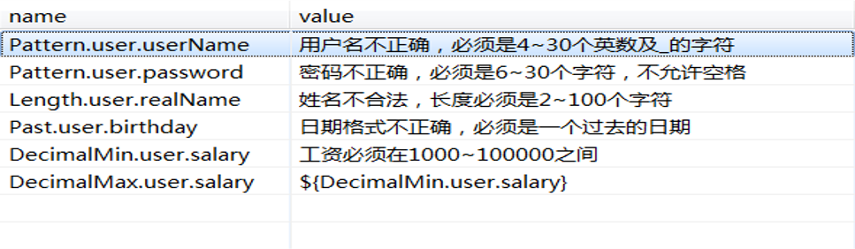

数据模型控制
数据模型访问结构
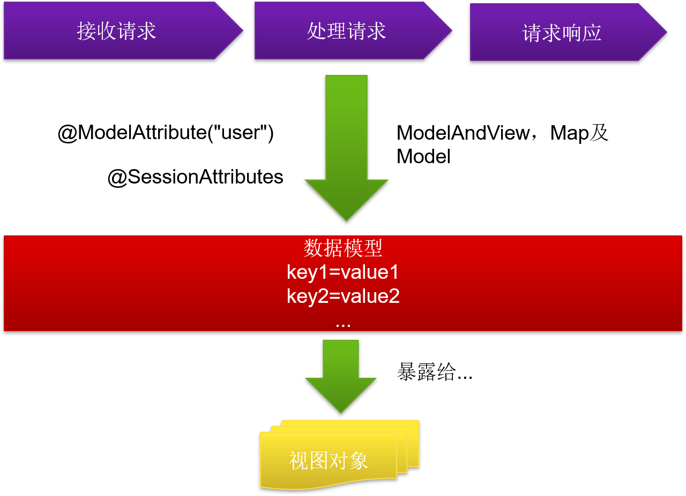
访问数据模型:ModelAndView
通过ModelAndView
访问数据模型：@ModelAttribute
访问数据模型：Map及Model
访问数据模型：@SessionAttributes
如果希望在多个请求之间共用某个模型属性数据，则可以在控制器类标注一个@SessionAttributes，Spring MVC会将模型中对应的属性暂存到HttpSession中:
视图及解析器
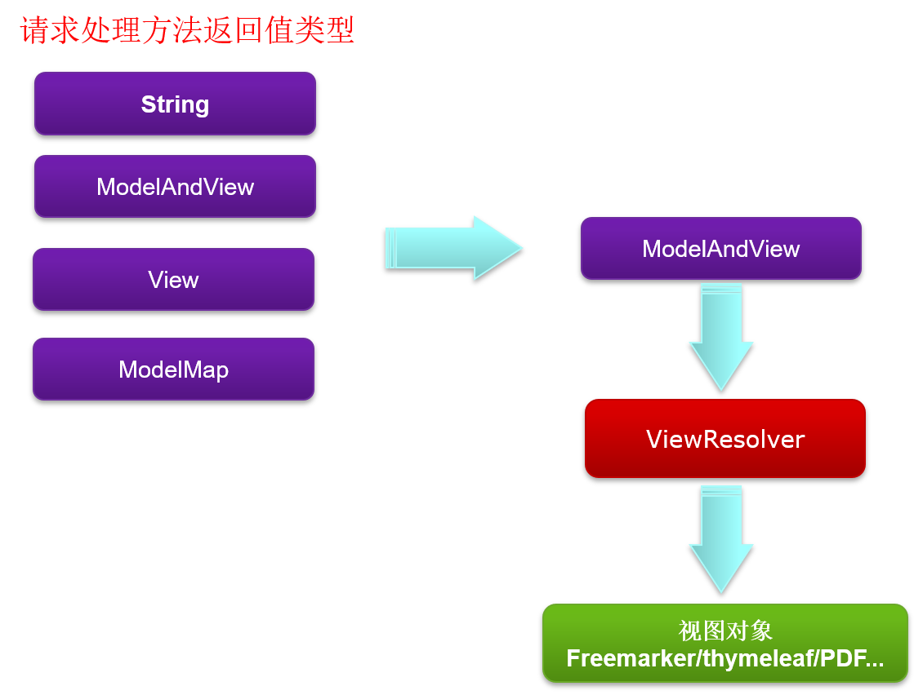
视图解析器类型
完成单一解析逻辑的视图解析器：
-
InternalResourceViewResolver
-
FreeMarkerViewResolver
-
BeanNameViewResolver
-
XmlViewResolver
- ...